My Portfolio
Find all the things I've worked on in this section from writing assignments to hands-on programming
exercises!
Writing
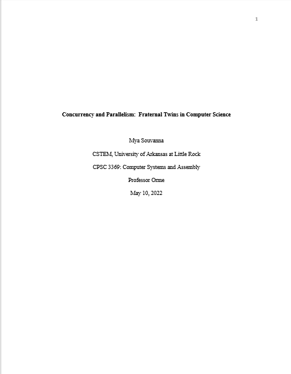
Writing Example 1Concurrency and Parallelism: Fraternal Twins in Computer Science
For this paper, I had to chose a topic in Computer Science that interested me and then had to write a 10-page report on it as well as present for 30 minutes. I was able to effectively research on my chosen topic that resulted in a well-written essay and presentation. Click on the icon to view a copy of the work.
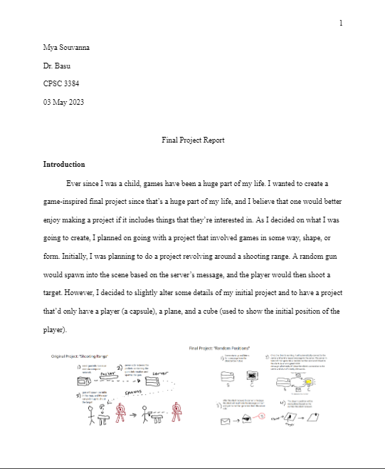
Writing Example 2Final Project Report
For this paper, I had disect my final project for my Computer Networks class and explain how I completed my project as well as explain the different snippets of code that I used in my project. Click on the icon to view a copy of the work.
Web Projects
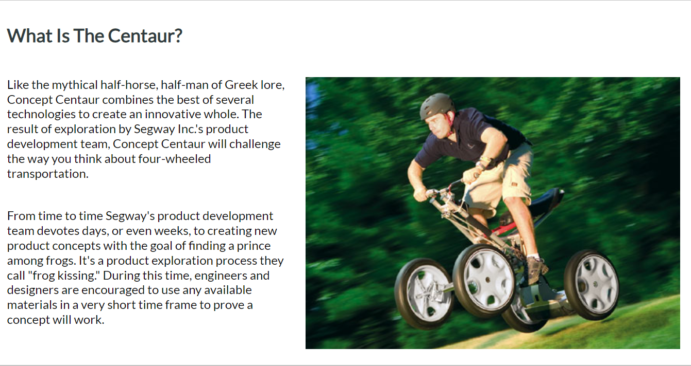
Web Project 1Segway Website
For this project, we were only given the content and required sections. We were given complete creative control to design the website however we wished that we thought best showcased the topic of the website, which for mine was a segway prototype. Click on the icon to view the website!
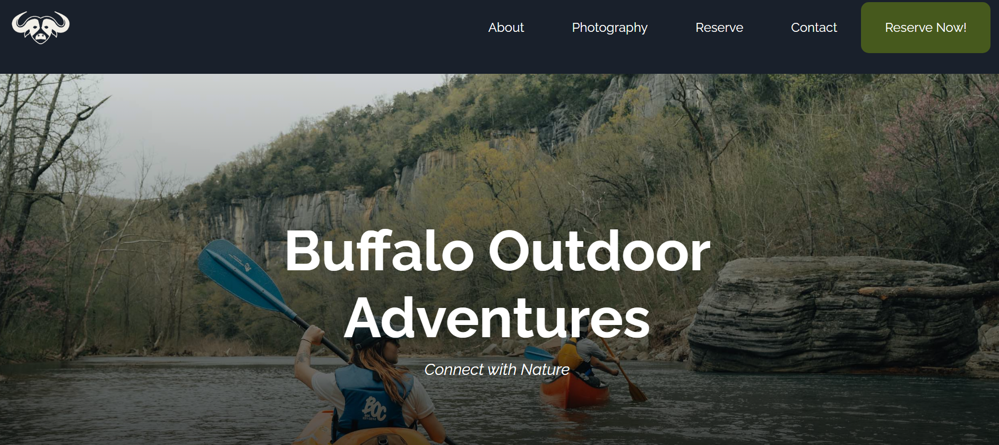
Web Project 2Buffalo Outdoors Adventure Website
In this project, I was assigned to a team with 3 other people. Our task was to create a website for a client based on their needs, wants, and other requests they had for us. While this was a trial to the actual project, this was a great exercise that prepared me for future group work and expectations. Click on the icon to view the website!
Database
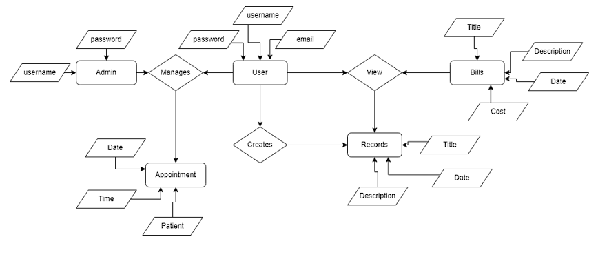
Database Project 1Patient Portal Entity Relationship Diagram
This ER diagram was created to show the different relationships between the entities for a 'patient portal' application idea I had thought of. For example, a user would be to either view their bills or create new records for their doctors. Click on the icon to view the image!
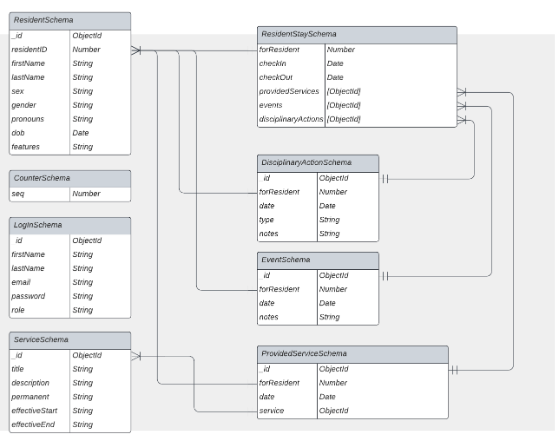
Database Project 2SARST ER Diagram
For the capstone project for Computer Science, my team and I were tasked with creating a website that the Salvation Army could use to help keep track of their residents that used their services. This ER Diagram shows how the data we needed would be stored. In the picture, the residents are stored in a collection with various attributes. In the various schemas, we were able to connect certain attributes together if they were the same field attributes such as residentID in ResidentSchema and forResident in EventSchema. Click on the icon to view the diagram!
Programming
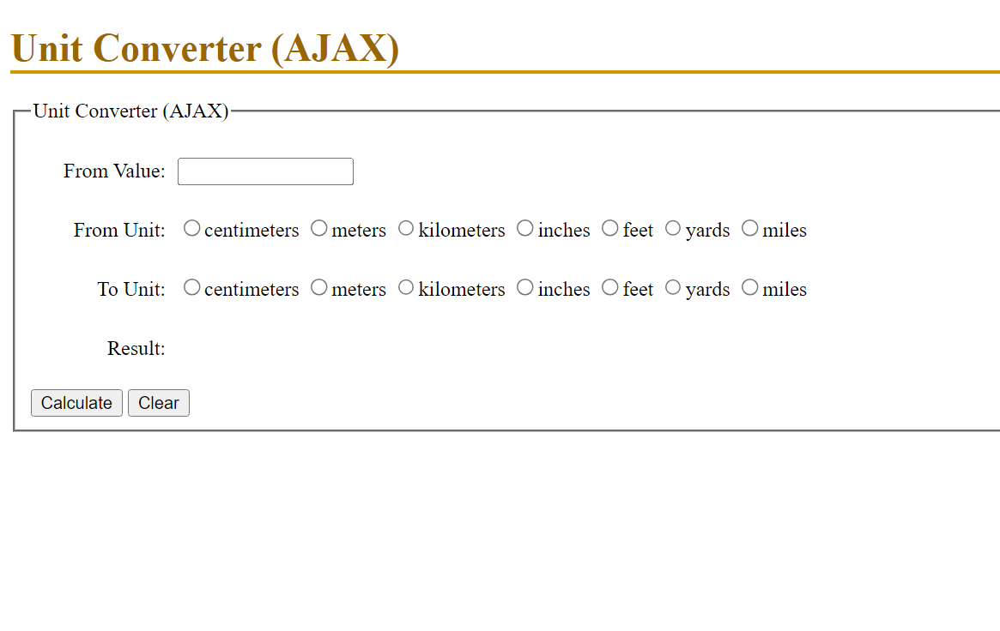
Programming Project 1Unit Conversion
This program converts and calculates any given 'From' value with a 'From' unit to any other unit chosen (e.g. converting from inches to feet). This program also uses validation to ensure that the user isn't trying to convert to an already-selected unit! Click on the icon to play with the program.
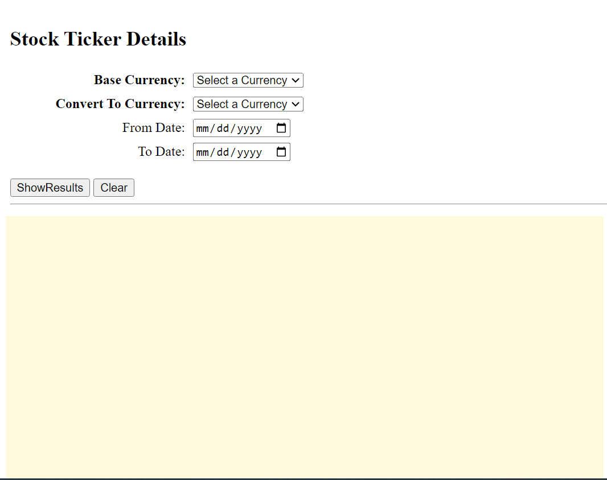
Programming Project 2Currency Conversion Rates
This program converts one of the 5 base currencies to another currency (within the group of 5 currencies listed) from a given timeline. After 'ShowResults' is clicked, a graph will pop up and show the conversion rate and its numbers over the timeline that's selected.
Soft Skills
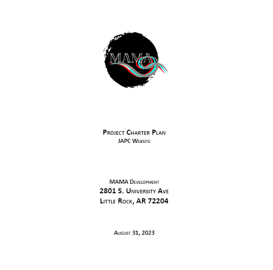
Soft Skill Example 1Capstone Project Charter
The project charter was created to help with the planning for the capstone project. It defines the goals, deadlines, objectives, and purpose of the project. It also helped inform our client about how we planned to complete their website. Click on the icon to view our project charter!
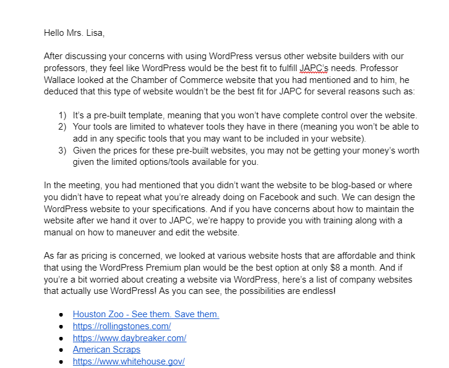
Soft Skill Example 2Email To Client
The purpose of this email was to help convince our client to use WordPress as they had doubts about if WordPress could fulfill all of their needs and wants in a website. As shown in the email, we used clear language and multiple sources/reasons to help reassure the client that WordPress would be suffice for their needs. Click on the icon to read the email!
Capstone Website
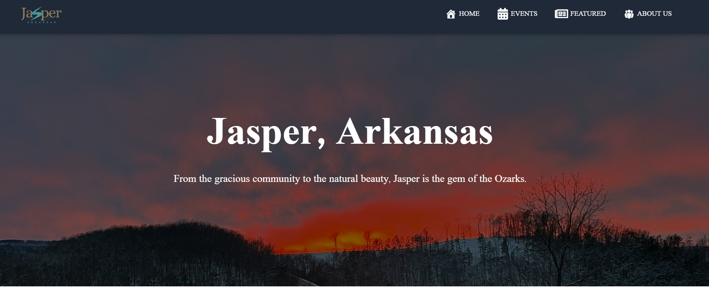
Capstone ProjectJasper Website
This website was created for an actual client that wanted a website for the committee that they were apart of. With the help of 3 other people, I was able to complete this fully-fuctioning website that satisfied all the client's needs and wants. Some of the website's features include forms, blog posts, and an event calendar. Click on the icon to visit the website!